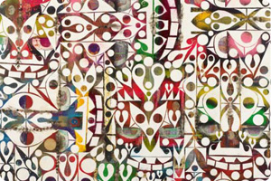

ABOUT
미술관 소개
미술관 비전
미술관 비전
'In Everyday Life' 일상이 예술이 되는 미술관
대림미술관은 우리가 무심코 지나치는 일상 속 사물의 가치를 발견하고 그것에 매력을 더하여 더 많은 사람들이 그 일상의 예술을 즐길 수 있도록 노력하는 미술관입니다. 2002년 종로구 통의동에 개관한 대림미술관은 사진 전시로 출발해 패션, 일러스트레이션 디자인으로 전시 컨텐츠 영역을 확대해왔습니다. 폴 스미스 전, 디터 람스 전, 유르겐 텔러 전, 주명덕 전, 칼 라거펠트 전, 핀 율 전 등 대중들과 소통할 수 있는 전시를 발굴, 개최하여 예술에 대한 일반인들의 관심을 증대시키기 위해 많은 노력을 기울였습니다.
Design
삶의 질을 향상시키는데 큰 역할을 한 좋은 디자인에 대한 모든 것
Photography
사진을 통해 나타나는 라이프스타일과 대중문화, 사회적 이슈
Fashion
‘라이프스타일로서 패션’을 다각도로 조망
Collection
영향력 있는 컬렉터들의 독특한 컬렉션으로 고급문화로서의 예술이 아닌 ‘대중과 소통하는 예술’ 제시
재단소개
재단소개
대림문화재단은 1996년 대림산업이 국내에서 문화예술을 발전, 진흥시키고자 설립했습니다.
대림문화재단의 주요 설립목표 중 하나는 일반 대중에게 문화예술의 체험 기회를 확대하는 것입니다. 이에 따라, 대림미술관을 산하기관으로 설립하여 국내 문화예술의 활성화와 국제 문화교류에 이바지하고 있습니다. 대림미술관은 국내외 유명 작가들의 전시를 기획하는 한편, 예술 · 디자인관련 세미나, 교육 프로그램을 마련하고 있으며, 그밖에 공연, 파티 등 다양한 문화행사를 진행하고 있습니다.이 외에도 대림문화재단은 대림 이미지 총서 등을 출판하여 현대 예술·디자인의 중요한 전문서적을 발간하는 데 앞장서고 있습니다.
연혁
- 2013
- 라이언 맥긴리 - 청춘, 그 찬란한 기록 전 개최
- How to Make a Book with Steidl: 슈타이들 전 개최
- SPARKLING SECRETS 스와로브스키 전 개최
- 2012
- 핀 율 전 관객 13만 명 돌파
- 칼 라거펠트 사진 전 12만 명 관람
- 대림미술관 프로젝트 스페이스 구슬모아 당구장(한남동) 개관
- 2011
- 디터람스 전 개최
- 2010
- 폴 스미스 전 관객 4만 명 돌파
- 2008
- 해외네트워크 확장 – 독일 Vitra Design Museum
- 2006
- 라이프스타일을 보여주는 다양한 전시 시작
- 2003
- 한우정 이사장 프랑스 문예공로훈장 '슈발리에상'수상
- 2002
- 서울로 이전해 지금의 대림미술관으로 개명
- 대림문화 아카데미 서울 강좌 오픈
- 1997
- 한국 최초의 사진 전문 미술관인 한림미술관 대전에 개관
- 1996
- 대림문화재단 설립
- 1993
- 대전에 한림갤러리 설립

대중을 위한 미술관
대림미술관은 소수 전문가와 애호가만을 위한 예술이 아니라, 더 많은 일반인이 쉽게 예술을 향유할 수 있도록 노력하고 있습니다. 이를 위해 전시를 쉽고 친근하게 전달하여 일반인도 예술을 이해하고 즐길 수 있도록 다양한 연구를 하고 있습니다.
공공 교육의 장
대림미술관은 다양한 전시관련 교육 프로그램 및 아카데미, 사회 공헌 프로그램을 활발히 운영함으로써 공공교육의 발전과 활성화에 이바지하고, 동시에 예술에 대한 다양한 접근통로를 만들어가고자 노력하고 있습니다.
테마가 있는 컨텐츠
대림미술관은 디자인/사진/컬렉션/패션 네 가지 테마 아래 전시를 기획합니다. 이 네 가지의 전시를 통해 삶과 떨어진 예술이 아니라 일상속의 예술, 라이프스타일을 느끼고 경험할 수 있도록 합니다.